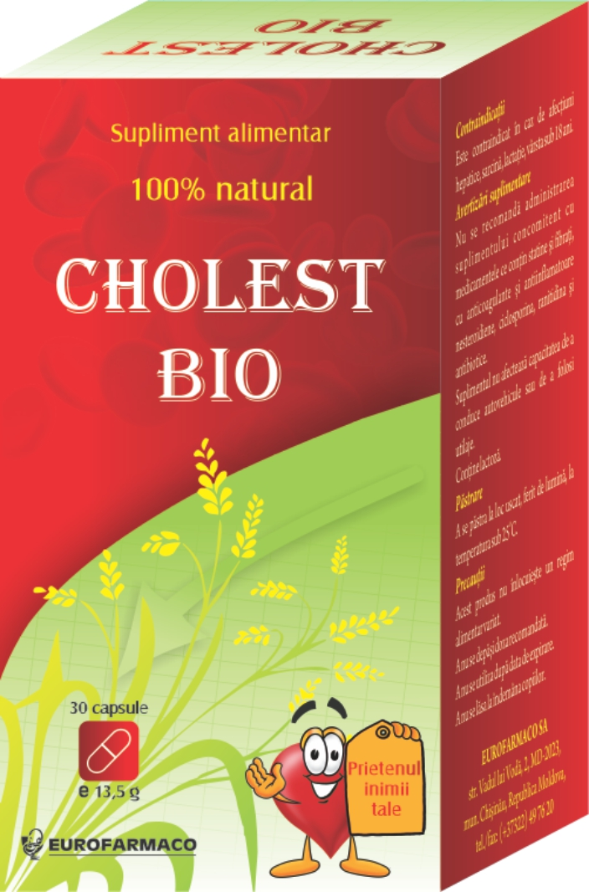

Trăind într-un secol marcat de tehnologie, în care totul se derulează rapid, omenirea tranzitează o perioadă de criză care se reflectă atât asupra stării spirituale a individului cât şi asupra stării sale de sănătate. Stresul, obicieiurile nocive (fumatul, consumul exagerat de alcool, de semipreparate şi de dulciuri), somnul insuficient şi alimentaţia incorectă sunt unii dintre cei mai importanţi factori care conduc la perturbarea echilibrului fiziologic caracteristic unui organism sănătos.
Este foarte important să înţelegem faptul că odată deteriorat acest echilibru restabilirea lui devine dificilă şi, de cele mai multe ori, necesită tratament medicamentos, care poate fi unul temporar sau necesar pe toată durata vieţii.
Printre cele mai frecvente boli ale începutului de mileniu se numără bolile cardiovasculare (implicit hipertensiunea arterială), diabetul zaharat, sindromul metabolic etc. Hipertensiunea arterială, o boală determinată de multiple cauze este strâns legată de hipercolesterolemie.
Schimbarea modului de viaţă printr-o alimentaţie corectă şi echilibrată ne pot ajuta să redobândim starea de sănătate, păstrând-o între limite rezonabile. Accentul trebuie să cadă asupra dietei şi, acolo unde nu se poate interveni direct, trebuie luate măsuri colaterale.
Hipercolesterolemia (mai ales creşterea fracţiunii LDLcolesterol implicată în aterogeneză) este un factor de risc de primă importanţă în apariţia bolilor cardiovasculare asociate societăţii moderne. Deşi numai o treime din valoarea colesterolului seric provine în urma aportului alimentar (restul fiind sintetizat de organism), aportul exogen al acestuia este foarte important în dieta omului modern. Excesele alimentare şi alţi factori de risc concomitenţi (sedentarismul, fumatul) ne fac vulnerabili faţă de bolile specifice începutului de secol XXI . Terapia medicamentoasă este esenţială în astfel de cazuri.
Suplimentele alimentare au menirea de a completa dieta normală, imbunatatind starea generala deteriorata de diverse afectiuni, ca urmare a unui stil de viata nesanatos, inclusiv alimentatie necorespunzatoare. Aceste suplimente nu trebuie să înlocuiască o terapie medicamentoasă specifică, dar o pot completa ca adjuvante ale tratamentului specific sau pot constitui un mijloc de completare a unei diete echilibrate.
Laboratoarele Ropharma ne oferă o soluţie inedită şi eficientă pentru combaterea hipercolesterolemiei:
Cholest Bio, un produs natural obţinut din drojdie de orez roşu.Drojdia de orez roşu (Monascus purpureus) produce prin fermentaţie monacolicolina K, substanţă similară structural cu lovastatina, cap de serie în grupa medicamentelor hipolipemiante numite statine, utilizate în tratamentul hipercolesterolemiei.
Aceasta acţionează prin inhibarea unei enzime implicate în sinteza endogenă a colesterolului (scăzând formarea colesterolului de către organismul uman, cu efecte marcate în special asupra fracţiunii aterogene LDL -colesterol, aşa numitul “colesterol rău”). Studiile clinice au arătat eficienţa acestei substanţe şi buna ei tolerabilitate (deşi incidenţa reacţiilor adverse este mult mai redusă decât în cazul terapiei medicamentoase este necesar controlul periodic al funcţiei hepatice şi al enzimelor care caracterizează activitatea musculaturii striate, deoarece această substanţă acţionează similar cu medicamentele din grupa statinelor). În plus, extractul de drojdie de orez roşu conţine alţi compuşi: flavonoide, acizi graşi nesaturaţi, fitosteroli cu efecte benefice asupra organismului, inclusiv la nivelul statusului pro-oxidant implicat în aterogeneză.
Pentru că este un produs natural recomandat de specialişti şi susţinut de o bogată literatură de specialitate;
Se prezintă într-o formă farmaceutică uşor de administrat;
Se eliberează fără prescripţie medicală;
Raportul cost/eficacitate este unul avantajos pentru pacienţi.
Suplimentul alimentar se administrează câte o capsulă de două ori pe zi sau se pot lua câte două capsule odată în timpul mesei. Produsul este contraindicat pacienţilor care suferă de afecţiuni hepatice, în sarcină şi alăptare, sau când interferează cu o medicaţie care conţine statine, fibraţi, ranitidină, antibiotice, anticoagulante sau antiinflamatoare.